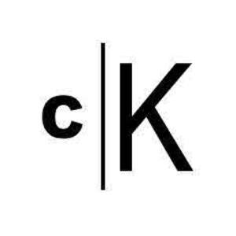

Trade Mark Journal No.2025/050 12 December 2025
UK00004303575 1 December 2025 (6,14,16,20,35,42)

- Class 6
- Bronzes [works of art]; Works of art of common metal; Figurines of bronze being works of art; Statues and works of art of common metals; Metal works of art [bronze]; Figurines of common metal being works of art; Works of art of non-precious metal; Sculpted works of art made from bronze; Sculpted works of art made from common metal; Metal works of art [common metal].
- Class 14
- Works of art of precious metal; Metal works of art [precious metal].
- Class 16
- Lithographic works of art; Works of art of paper; Works of art made of paper; Paintings and calligraphic works; Fine art prints; Calligraphic works; Art prints; Art etchings; Graphic art reproductions; Graphic art books; Works of art and figurines of paper and cardboard, and architects' models; Art pictures; Art mounts; Art paper; Photographic or art mounts; Printed art reproductions; Decoration and art materials and media; Adhesives for art use; Painting sets for artists; 3D wall art made of paper.
- Class 20
- Works of art of plastic; Works of art of cork; Works of art of bamboo; Works of art of nutshell; Works of art of hay; Works of art of straw; Works of art made of plaster; Works of art made of wax; Works of art made of wood; Works of art made of amber; Works of art made of amberoid; Storage racks for storing works of art; Works of art of wood, wax, plaster or plastic; Art (Works of -) of wood, wax, plaster or plastic; Glass for use in framing art; Work stations [furniture].
- Class 35
- Retail services for works of art provided by art galleries; Retail services in relation to works of art; Wholesale services in relation to works of art; Retail services in relation to downloadable virtual works of art; Online retail services in relation to downloadable virtual works of art; Organization of art exhibitions for commercial or advertising purposes; Arranging and conducting of art exhibitions for commercial or advertising purposes; Retail services in relation to art materials; Advertising services relating to public works; Wholesale services in relation to art materials.
- Class 42
- Authenticating works of art; Works of art (Authenticating -); Authentication in the field of works of art; Art work design; Authenticating fine art; Authentication of fine art objects; Design of audio-visual creative works; Commercial art design; Graphic art services; Graphic art design; Industrial art design; Industrial and graphic art design; Industrial testing of engineering works; Graphic arts design; Design (Graphic arts -); Design of sculptures; Design of artwork.
Colin Kerrigan